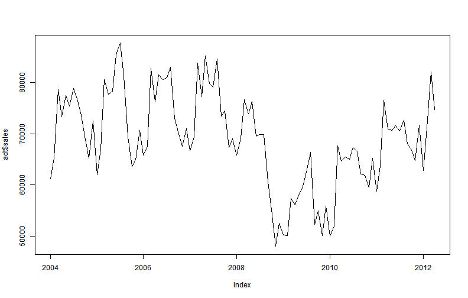
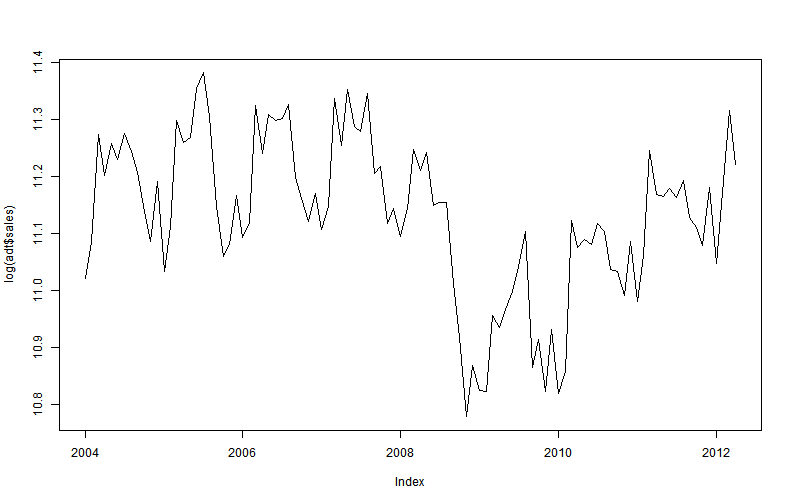
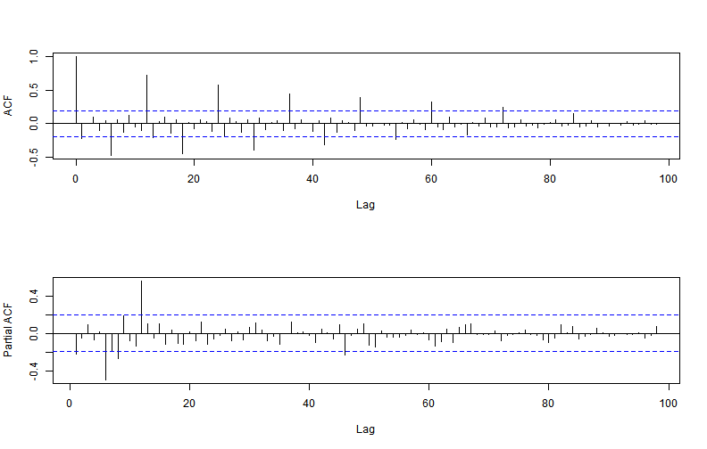
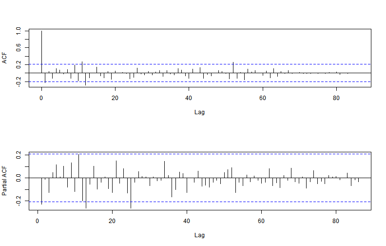

Preliminary Project
Using R on Nowcastic Forecasts with Google Trends
CSJP
Analyze Data
- My data set (adt) looks like:
## sales tss ins
## 2004-01-01 61146 -0.21 -0.07
## 2004-02-01 65230 -0.28 -0.11
## 2004-03-01 78662 -0.28 0.10
## 2004-04-01 73252 -0.31 0.05
## 2004-05-01 77491 -0.21 0.25
## 2004-06-01 75355 -0.42 0.16
- Verify if target variable (sales) is time-correlated:
##
## Box-Ljung test
##
## data: coredata(adt$sales)
## X-squared = 61.45, df = 1, p-value = 4.552e-15
##
Yes, then plot it:

Since it has large variability, log it, then plot it:

Diff it and acf/pacf it:

There is a seasonal component, so diff it by 12, then acf/pacf it: 
To sum up - baseline model is a seasonal AR-1 model
Model Data
- Model 1 - baseline model
- \(log(y_t) = a_1log(y_{t-1}) + a_{12}log(y_{t-12}) + e_t\)
##
## Call:
## lm(formula = y ~ lagy.1 + lagy.12, data = d[-nrow(d), ])
##
## Residuals:
## Min 1Q Median 3Q Max
## -0.21300 -0.03846 0.00314 0.04178 0.21807
##
## Coefficients:
## Estimate Std. Error t value Pr(>|t|)
## (Intercept) 0.7259 0.7525 0.96 0.34
## lagy.1 0.6374 0.0702 9.07 3.8e-14 ***
## lagy.12 0.2973 0.0692 4.29 4.6e-05 ***
## ---
## Signif. codes: 0 '***' 0.001 '**' 0.01 '*' 0.05 '.' 0.1 ' ' 1
##
## Residual standard error: 0.0798 on 85 degrees of freedom
## (12 observations deleted due to missingness)
## Multiple R-squared: 0.699, Adjusted R-squared: 0.692
## F-statistic: 98.7 on 2 and 85 DF, p-value: <2e-16
##
- Model 2 - baseline model plus two Google Trends
- \(log(y_t) = a_1log(y_{t-1}) + a_{12}log(y_{t-12}) +tss+ins+ e_t\)
##
## Call:
## lm(formula = y ~ ., data = d[-nrow(d), ])
##
## Residuals:
## Min 1Q Median 3Q Max
## -0.16679 -0.04493 -0.00213 0.04220 0.17158
##
## Coefficients:
## Estimate Std. Error t value Pr(>|t|)
## (Intercept) 2.0523 0.8972 2.29 0.025 *
## lagy.1 0.5403 0.0666 8.12 3.8e-12 ***
## lagy.12 0.2840 0.0673 4.22 6.2e-05 ***
## tss 0.3169 0.0637 4.98 3.5e-06 ***
## ins 0.3644 0.0866 4.21 6.4e-05 ***
## ---
## Signif. codes: 0 '***' 0.001 '**' 0.01 '*' 0.05 '.' 0.1 ' ' 1
##
## Residual standard error: 0.0692 on 83 degrees of freedom
## (12 observations deleted due to missingness)
## Multiple R-squared: 0.779, Adjusted R-squared: 0.768
## F-statistic: 73 on 4 and 83 DF, p-value: <2e-16
##
- Verify if Model 2 is improved significantly from Model 1:
## Analysis of Variance Table
##
## Model 1: y ~ lagy.1 + lagy.12
## Model 2: y ~ lagy.1 + lagy.12 + tss + ins
## Res.Df RSS Df Sum of Sq F Pr(>F)
## 1 85 0.541
## 2 83 0.398 2 0.143 14.9 2.9e-06 ***
## ---
## Signif. codes: 0 '***' 0.001 '**' 0.01 '*' 0.05 '.' 0.1 ' ' 1
## nmse.baseline nmse.w.gtrends nmse.improved (%)
## 0.3510 0.2743 21.8441
- Pick Model 2 to next step
Forecast Data
- Nowcastic forecast on May sales with Google Trends data available on May, 2012
## sales tss ins
## 2011-12-01 71674 0.31 -0.40
## 2012-01-01 62757 0.08 -0.27
## 2012-02-01 71103 0.15 -0.27
## 2012-03-01 82109 0.01 -0.18
## 2012-04-01 74632 -0.03 -0.21
## 2012-05-01 NA -0.04 -0.15
- Forecast with prediction intervals
## fit lwr upr
## 2012-05-01 74506 64818 85641